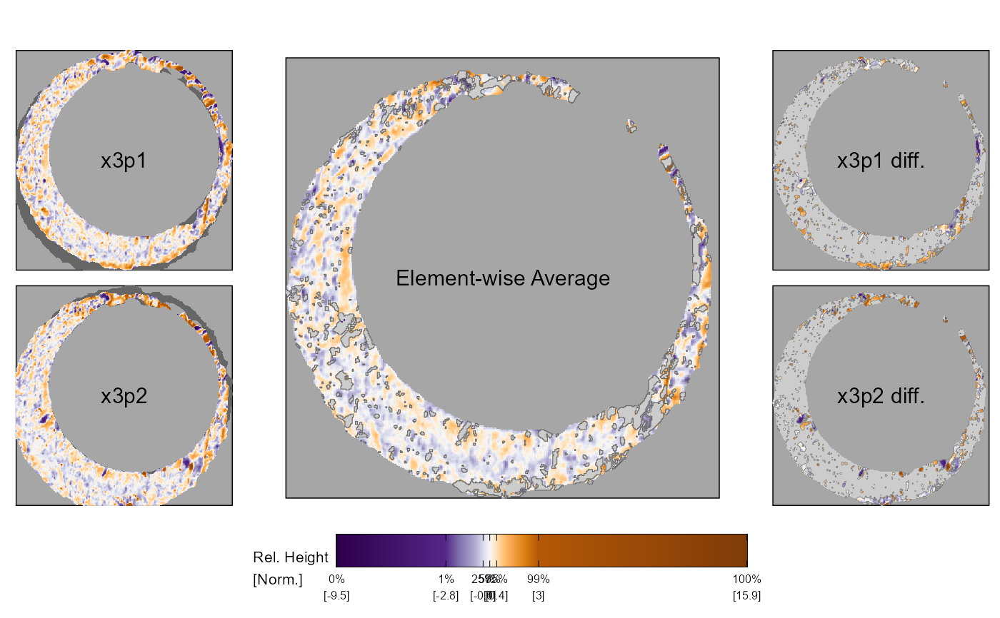

Plot filtered element-wise average and differences for two cartridge case scans
x3p_comparisonPlot.RdPlot filtered element-wise average and differences for two cartridge case scans
Usage
x3p_comparisonPlot(
x3p1,
x3p2,
threshold = 1,
plotLabels = c("x3p1", "x3p2", "Element-wise Average", "x3p1 diff.", "x3p2 diff."),
showOutlines = TRUE,
labelSize = 4,
label_x = ncol(x3p1$surface.matrix)/2,
label_y = nrow(x3p1$surface.matrix)/2,
type = "faceted",
legendLength = grid::unit(3, "in"),
legendUnit = "Norm.",
legendHoriz = -1.2,
legendQuantiles = c(0, 0.01, 0.25, 0.5, 0.75, 0.99, 1)
)Arguments
- x3p1
an x3p object
- x3p2
another x3p object
- threshold
the default filtering threshold. Defaults to a scalar (1 micron = 1e-6 meters), but can also be set to a scalar-valued function that takes x3p1 and x3p2 as arguments. For example, threshold = impressions::x3p_sd will use the joint standard deviation of x3p1 and x3p2 as the threshold.
- plotLabels
a character vector of five elements that will display as labels on each plot
- showOutlines
boolean value of whether to show outline around the filtered elements in the element-wise average and difference plots. See notes for more details
- labelSize
font size for the plot labels
- label_x
horizontal location of the plot labels
- label_y
vertical location of the plot labels
- type
return the five plots in a single, faceted plot or as a list
- legendLength
length of the plot legend. Passed to the barwidth argument of the ggplot2::guide_colorbar function
- legendUnit
unit of measurement for the surface values (typically either "micron" or "Norm.")
- legendHoriz
horizontal location of the legend. Passed to the patchwork::inset_element function
- legendQuantiles
quantile values to be shown as legend labels. Passed within the breaks argument of the ggplot2::scale_fill_gradientn function
Note
The showOutlines argument set to FALSE sidesteps a computation of outlines for the filtered regions in the comparison plot. This is because some systems, particularly Linux systems, may not have the necessary libraries required to compute the outline installed by default. Specifically, the function to compute the outlines relies on an R package called rgeos (https://cran.r-project.org/web/packages/rgeos/index.html), which is an API to the geos geometry engine (https://libgeos.org/). Linux users need to install geos to install rgeos to compute the outline. See this post for more info: https://stackoverflow.com/questions/53389181/installing-the-r-package-rgeos-on-linux-geos-config-not-found-or-not-executab Alternatively, you can skip the outline calculation all together using this showOutlines argument at the expense of not seeing the region outlines, which are more a nice visual aid than a necessary component of the plot.
Examples
data("K013sA1","K013sA2")
compData <- cmcR::comparison_allTogether(reference = K013sA1,
target = K013sA2,
theta = 3,numCells = c(1,1),
maxMissingProp = .99,
sideLengthMultiplier = 1.1,
returnX3Ps = TRUE)
x3p_comparisonPlot(x3p1 = compData$cellHeightValues[[1]],x3p2 = compData$alignedTargetCell[[1]])
#> Regions defined for each Polygons
#> Warning: Duplicated aesthetics after name standardisation: colour
#> Warning: Duplicated aesthetics after name standardisation: colour
#> Warning: Duplicated aesthetics after name standardisation: colour
#> Warning: Raster pixels are placed at uneven horizontal intervals and will be shifted
#> ℹ Consider using `geom_tile()` instead.
#> Warning: Raster pixels are placed at uneven horizontal intervals and will be shifted
#> ℹ Consider using `geom_tile()` instead.
#> Warning: Raster pixels are placed at uneven horizontal intervals and will be shifted
#> ℹ Consider using `geom_tile()` instead.
#> Warning: Raster pixels are placed at uneven horizontal intervals and will be shifted
#> ℹ Consider using `geom_tile()` instead.
